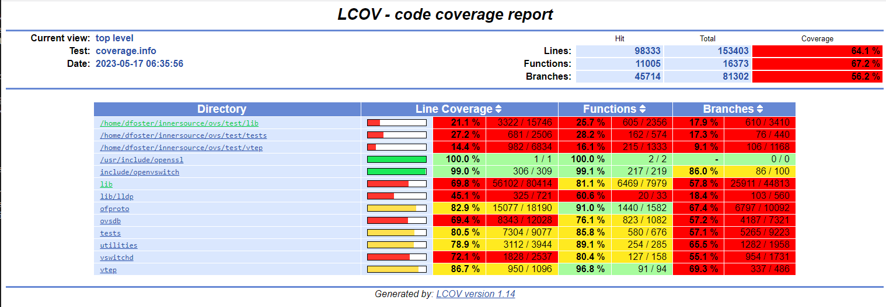

Running OVS Unit Tests
OVS comes with its own unit test suite. The instructions for running it may be found in the OVS Testing document.
Bootstrap OVS build
The first step is to initialize the ovs build system by running the bootstrap script. You can skip this step if you’ve already run it (e.g., by building OVS).
pushd ovs/ovs
./boot.sh
popd
The script copies a number of files to the ovs/ovs directory and
generates the configure script.
Initialize test directory
The next step is to build OVS. We’re going to do an out-of-source build so as not to clutter the OVS directory or interfere with our regular build.
pushd ovs
mkdir test && cd test
../ovs/configure
Note that we do not specify any configuration options.
This step generates the files necessary to do the build in the ovs/test directory.
Build OVS in test directory
The next step is to build OVS in the ovs/test directory.
make -j6 V=0
You can change the number of build threads (-jN) to something
appropriate for your system.
The V=0 parameter gives you a less verbose build log.
Run unit tests
Now you can run the unit test suite.
make check TESTSUITEFLAGS=-j8
The TESTSUITEFLAGS parameter accepts a number of options, which are described in the testing.rst document.
The -j8 parameter value specifies the number of test threads to use. You will almost undoubtedly want to use this parameter; there are ~2500 test cases in the suite.
Review test results
Each test case generates a single line of output as it is executed, consisting of the test number, test name, and the results of the test.
A summary is displayed after the last test case has been run.
## ------------- ##
## Test results. ##
## ------------- ##
ERROR: 2504 tests were run,
8 failed unexpectedly.
3 tests were skipped.
## -------------------------- ##
## testsuite.log was created. ##
## -------------------------- ##
Please send \`tests/testsuite.log' and all information you think might
help:
To: <bugs@openvswitch.org>
Subject: [openvswitch 3.0.90] testsuite: 771 773 778 780 781 1279 1949 2232 failed
You may investigate any problem if you feel able to do so, in which
case the test suite provides a good starting point. Its output may
be found below \`tests/testsuite.dir'.
Details of each failed test are saved in the ovs/tests/testsuite.dir
directory, for use in debugging.
~/recipe/ovs/test$ ls tests/testsuite.dir
0771 0773 0778 0780 0781 1279 1949 2232 at-job-fifo
~/recipe/ovs/test$ ls tests/testsuite.dir/0771
cleanup conf.db flows.txt ovs-vswitchd.log ovsdb-server.log run stderr stdout testsuite.log
Measure code coverage
Enable measurement
To enable unit test code coverage, you will need to build OVS with the –enable-coverage option.
cd recipe/ovs
rm -fr test
mkdir test && cd test
../ovs/configure --enable-coverage
make -j8 V=0
Run and measure tests
Then run the test suite using the check-lcov Makefile target.
make check-lcov TESTSUITEFLAGS=-j8
(progress messages omitted)
## ------------- ##
## Test results. ##
## ------------- ##
ERROR: 2504 tests were run,
7 failed unexpectedly.
3 tests were skipped.
## -------------------------- ##
## testsuite.log was created. ##
## -------------------------- ##
Please send \`tests/testsuite.log' and all information you think might
help:
To: <bugs@openvswitch.org>
Subject: [openvswitch 3.0.90] testsuite: 771 773 778 780 781 961 1279 failed
You may investigate any problem if you feel able to do so, in which
case the test suite provides a good starting point. Its output may
be found below \`tests/testsuite.dir'.
make: [Makefile:7035: check-lcov] Error 1 (ignored)
/usr/bin/mkdir -p tests/lcov
lcov -b /home/porthos/recipe/ovs/test -d /home/porthos/recipe/ovs/test -q -c --rc lcov_branch_coverage=1 -o tests/lcov/coverage.info
genhtml -q --branch-coverage --num-spaces 4 -o tests/lcov tests/lcov/coverage.info
genhtml: WARNING: negative counts found in tracefile tests/lcov/coverage.info
coverage report generated at tests/lcov/index.html
View report
To view the coverage report, open ovs/tests/lcov/index.html in a browser.
